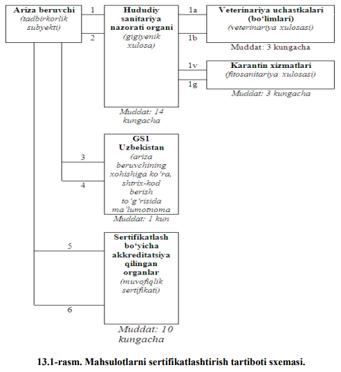

<!DOCTYPE html>
<html lang="en">

<head>
    <meta charset="UTF-8">
    <meta http-equiv="X-UA-Compatible" content="IE=edge">
    <meta name="viewport" content="width=device-width, initial-scale=1.0">
    <link rel="stylesheet" href="../assets/font-awesome-4.7.0/css/font-awesome.min.css">
    <link rel="stylesheet" href="https://maxcdn.bootstrapcdn.com/bootstrap/4.0.0/css/bootstrap.min.css"
        integrity="sha384-Gn5384xqQ1aoWXA+058RXPxPg6fy4IWvTNh0E263XmFcJlSAwiGgFAW/dAiS6JXm" crossorigin="anonymous">
    <link rel="stylesheet" href="https://stackpath.bootstrapcdn.com/bootstrap/4.3.1/css/bootstrap.min.css">

    <link rel="stylesheet" href="https://maxcdn.bootstrapcdn.com/font-awesome/4.7.0/css/font-awesome.min.css">
    <title>Document</title>
    <style>
        .card {
            box-shadow: 0 8px 16px 0 rgba(0, 0, 0, 0.2), 0 6px 20px 0 rgba(0, 0, 0, 0.19);
        }
    </style>


</head>

<body><br>
    <nav style="background-image: url(./../bluu.png);" class="navbar fixed-top navbar-expand-lg navbar-light bg-light">
        <a href="./../maruza.html"><i style="color: white;" class="fa fa-arrow-left"></i></a>
        <button class="navbar-toggler" type="button" data-toggle="collapse" data-target="#navbarTogglerDemo03"
            aria-controls="navbarTogglerDemo03" aria-expanded="false" aria-label="Toggle navigation">
            <span class="navbar-toggler-icon"></span>
        </button>
        <a style="text-align: center;" class="navbar-brand" href="#">
            <div class="badge badge-primary text-wrap" style="width: 242px; border-radius: 30px;">
                Metrologiya / 13-ma`ruza
            </div>

            <div class="collapse navbar-collapse" id="navbarTogglerDemo03">
                <ul class="navbar-nav mr-auto mt-0 mt-lg-0">
                    <a class="navbar-brand" href="./../../index.html">
                        <i style="color: white;" class="fa fa-home" aria-hidden="true"></i>
                    </a>
                    <li class="nav-item">
                        <a class="nav-link" href="http://library.ziyonet.uz/ru/book/103802"><i style="color: white;"
                                class="fa fa-globe">
                                <span style="color: white;">Mavzuni internetdan ko`rish</i> <span
                                class="sr-only">(current)</span></a>
                    </li>

                </ul>
                <form class="form-inline my-2 my-lg-0">
                    <input class="form-control mr-sm-2" type="search" placeholder="Qidiruv...." aria-label="Search">
                    <button class="btn btn-outline-success my-2 my-sm-0" type="submit"><span
                            style="color: white;">Qidiruv</span></button>
                </form>
            </div>
    </nav>

    <!-- tepaga chiqish tugmasi -->
    <button onclick="topFunction()" style="position: fixed;z-index: 1000;bottom: 20px;right: 20px;display: none;"
        id="topBtn" type="button" class="btn btn-primary">
        <i class="fa fa-arrow-up" aria-hidden="true"></i>
    </button>
    <script src="./../../top.js"></script>

    <div class="card" style="width: 21rem;margin: auto;margin-top: 40px;">
        <div class="card-body">
            <h5 style="margin-left: 35px;" class="card-title">SERTFIKATLASHTIRISH TARTIBI.
                SERTIFIKATLASHTIRISH SXEMALARI</h5>
            <br>
            <p class="card-text"><b> Reja:<br>
                    <br>13.1. Sertifikatlashtirishni o‘tkazish tartib-qoidalari.
                    <br> 13.2. Sertifikatlashtirish sxemalari.
                    <br>13.3. Sertifikatlashtirishda mahsulotni tekshiris</b>
            </p><br>
            <p>Sertifikatlashtirishni o‘tkazish uchun umumiy qoidalar o‘rnatiladi. Bunday
                qoidalar majburiy va ixtiyoriy sertifikatlashtirishni tashkillashtirish va o‘tkazishda
                qo‘llaniladi. Bu qoidalar mamlakatimizda va xorijda tayyor-langan barcha
                sertifikatlashtirish obyektlariga nisbatan tadbiq etiladi.
                <br> Sertifikatlashtirishni o‘tkazish tartibida sertifikatlashtirish amallarining
                majmuini tashkil etuvchi harakatlarning navbati o‘rnatiladi. Bu tartib va bir turli
                mahsulotni sertifikatlashtirish tarzi sertifikatlashtirish bo‘yicha idoraning
                hujjatlarida uni akkreditlashda o‘rnatiladi. Idorada sertifikat-lashtiriladigan
                mahsulotga me’yoriy hujjatlar va sinash usullari, shuningdek sinashlarni o‘tkazish
                uchun laboratoriyalar mavjud bo‘ladi.
                <br>O‘zbekiston Respublikasi sertifikatlashtirish milliy tizimida mahsulotni
                sertifikatlashtirish quyidagi jarayonlarni o‘z ichiga oladi:
                <br>a) sertifikatlashtirish idorasiga sertifikatlashtirish to‘g‘risida so‘rovnoma
                berish va uni ko‘rib chiqish;
                <br>b) sertifikatlashtirishga taqdim etilgan mahsulotga oid me’yoriy hujjatni va
                so‘rovnomaga ilova qilgan boshqa hujjatlarni tahlil qilish;
                <br>v) so‘rovnoma bo‘yicha qaror qabul qilish;
                <br>g) sinovlar dasturini tayyorlash va tasdiqlash (6 va 9-sxemalardan tashqari);
                <br>d) namunalarni identifikatlash (aynan o‘xshashligini aniqlash), tanlab olish va
                laboratoriyaga olib kelish (6 va 9-sxemalardan boshqa);
                <br>e) namunalarni akkreditlangan sinov laboratoriyasida sinashni bajarish (6 va
                9-sxemalardan boshqa);
                <br>j) mahsulotni ishlab chiqarish holatini tekshirish (sertifikat-lashtirishning 3, 4
                va 5-sxemalari uchun);
                <br>z) sifat tizimini baholash (5 va 6-sxemalari uchun);
                <br>i) mahsulotning muvofiqligi to‘g‘risida deklaratsiya yozish (9-sxema);
                <br>k) olingan natijalarni tahlil qilish, muvofiqlik sertifikatini berish yoki uni
                berishdan voz kechish;
                <br> m) muvofiqlik sertifikatini O‘zbekiston Respublikasi sertifikat-lashtirish
                milliy tizimi Davlat reestrida ro‘yxatdan o‘tkazish.
                <br>Sertifikatlashtirishga taqdim etilgan mahsulot me’yoriy hujjatida gigienik,
                veterinariya, fitosanitariya yoki ekologik talablar mavjud bo‘lgan-da
                sertifikatlashtirish idorasi gigienik va veterinariya ekspertizalarini, fitosanitariya
                tekshiruvini o‘tkazish va ekologik sertifikatlashtirish zarurligini aniqlaydi. Mazkur
                amallar sertifikatlashtirish sinovlari bilan bir vaqtda o‘tkazilishi mumkin va
                so‘rovchiga muvofiqlik sertifikatini berishdan avval, bu amallar tegishli hujjatlar
                berilishi bilan tugallanishi lozim.
                <br>Sertifikatlashtirish idorasi tadbirkorlik subyektlarining yozma arizasiga
                muvofiq, sertifikatlashtirishni o‘tkazishda davlat sanitariya nazorati idoralaridan,
                davlat veterinariya nazorati idoralaridan va o‘simliklar karantini bo‘yicha davlat
                idoralaridan, shuningdek tabiatni muhofaza qilish davlat idoralaridan barcha zarur
                xulosalarni olishga oid agentlik xizmatlarini ko‘rsatishga haqlidir. Bunda
                namunalarni tog‘ri ajratib olish va ularni tegishli davlat idoralariga berish vazifasi,
                shuningdek mas’ullik sertifikatlashtirish idorasiga yuklatiladi.
                <br>Chetdan kelitiriladigan mahsulotni sertifikatlashtirishda quyidagi hujjatlar
                taqdim etilishi lozim:
                <br>- ishlab chiqariladigan mahsulotga me’yoriy hujjat nusxasi (amalda bor bo‘lgan
                taqdirda);
                <br>- mahsulot yorlig‘i namunasi yoki mahsulot to‘g‘risida ma’lumot;
                <br>- tovarga qo‘shib jo‘natiladigan hujjat nusxasi. Bu nusxaga mahsulotning
                <br>O‘zbekiston Respublikasi bojxonasi hududiga kelganligi to‘g‘risidagi belgi
                qo‘yilgan bo‘lishi shart;
                <br>- amalda bor bo‘lgan taqdirda, davlat sanitariya nazorati idorasining
                laboratoriyasida o‘tkazilgan sinovlarning natijalari yozilgan gigienik sertifikat va
                me’yoriy hujjatda belgilangan boshqa talablar to‘g‘risidagi ma’lumotlar nusxasi
                (veterinariya va fitosanitariya xulosalari, ekologik sertifikat).
                
                <br> Mahsulotlarni certifikatlashtirish tartiboti sxemasi quyidaga 96-rasmda keltirilgan.
                <br><em> 13.1-rasmga izohlar:</em>
                <br>1. Ariza beruvchi zarur hollarda gigiyenik xulosa olish uchun hududiy sanitariya
                nazorati organiga zarur hujjatlarni ilova qilgan holda ariza beradi.
                <br>Hududiy davlat sanitariya nazorati organi belgilangan tartibda joyiga borgan
                holda laboratoriya sinovlari o‘tkazish uchun mahsulotlardan namuna oladi va
                obyektni tekshiradi.
                <br>1a. Chorva mahsulotlari uchun hududiy sanitariya nazorati organi ariza
                beruvchidan hujjatlar olingan kundan keyingi kundan kechikmasdan tuman (shahar)
                veterinariya xizmati organiga buyurtmanoma jo‘natadi.
                <br> 1b. Veterinariya xizmati organi uch kun muddatda hududiy sanitariya nazorati
                organiga veterinariya xulosasini yoki xulosa berishni rad etishga sabab bo‘lgan aniq
                qonun hujjatlari normalarini ko‘rsatgan holda yozma javob yuboradi.
                <br>Veterinariya xizmati organi 20 kungacha izolatsiyalash-cheklash (karantin)
                choralarini belgilash huquqiga ega. Bunda veterinariya xulosa-sini berish tartiboti
                karantin muddati tugagunga qadar to‘xtatib turiladi.
                <br>1v. O‘simlik mahsulotlari uchun hududiy sanitariya organi ariza beruvchidan
                hujjatlar olingan kundan keyingi kundan kechikmasdan tuman (shahar) o‘simliklar
                karantini davlat xizmati organiga buyurtmanoma jo‘natadi.
                <br>1g. O‘simliklar karantini davlat xizmati organi ikki kun muddatda fitosanitariya
                xulosasi yoki salbiy xulosa beradi.
                <br>2. Laboratoriya sinovlari, shuningdek veterinariya hamda fitosanitariya
                xulosalaridan ijobiy natija olinganda, hududiy sanitariya nazorati organi ariza
                beruvchiga gigiyenik xulosa beradi.
                <br>3,4. Ariza beruvchi o‘z xohishiga ko‘ra, tashkilot va ishlab chiqaradigan
                mahsuloti shtrixli kodda foydalaniladigan tovar kodini olish uchun "GS1
                Uzbekistan" ga murojaat qilishi mumkin.
                <br>5. Ariza beruvchi muvofiqlik sertifikati olish uchun sertifikatlash bo‘yicha
                akkreditatsiya qilingan organga zarur hujjatlarni ilova qilgan holda ariza taqdim
                etadi. ( Ariza gigiyenik xulosa olish uchun beriladigan ariza bilan bir vaqtda berilishi
                mumkin).
                <br>6. Sertifikatlash bo‘yicha akkreditatsiya qilingan organ 15 ish kunidan ortiq
                bo‘lmagan muddatda muvofiqlik sertifikati yoki aniq qonun hujjatlari normalarini
                ko‘rsatgan holda yozma rad javobini beradi.
                <br><em> Sertifikatlashtirish tartibotining umumiy muddati 10 kundan 30 kungachani
                    tashkil etadi.</em>
            </p>
        </div>
    </div>

    <div class="card" style="width: 21rem;margin: auto;margin-top: 40px;">
        <div class="card-body">
            <h5 style="margin-left: 20px;" class="card-title">Sertifikatlashtirish sxemalari</h5>
            <br>
            <p class="card-text"><em> Sertifikatlashtirish sxemasi </em>- bu muvofiqlikni baholashda uchinchi tomon
                tarafidan amalga oshiriladigan faoliyatlar tarkibi va ketma-ketligidir.
                <br> Murojat etuvchining taklifi, mahsulot hajmi va kelib tushish vaqti, sinov
                uslubi, ishlab chiqarishning o‘ziga xos xususiyatlari va iste’molchilarga xavf-xatar
                tug‘dirishi mumkin bo‘lganligidan, har bir aniq vaziyatdan kelib chiqib
                sertifikatlashtirish sxemasini sertifikatlashtirish idorasi tanlaydi.
                <br>O‘zbekiston Respublikasining sertifikatlashtirish milliy tizimi (O‘z SMT)
                tomonidan tavsiya etilgan serifikatlashtirish sxemalari haqida quyida ma’lumotlarni
                keltirib o‘tamiz.
                <br><b> 1-sxema.</b> Na’munali mahsulotlarni (umumlashgan namunalarni)
                sertifikatlashtirishda qo‘llaniladi va akkreditlangan sinov laboratoriyasida majburiy
                ko‘rsatgichlar, birinchi o‘rinda xavfsizlik ko‘rsatgichlari asosida sinov o‘tqazishni
                o‘z ichiga oladi. Hamda ushbu sxema mahsulotda aniq belgilangan normativ hujjat
                bo‘lmaganida qo‘llaniladi.
                <br> Bu xildagi sertifikatlashtirishda sinovga taqdim etilgan namunani belgilangan
                talablarga muvofiqligi tasdiqlanadi, xolos. Bu yo‘l o‘zining soddaligi va uncha ko‘p
                xarajat talab qilmasligi tufayli milliy va xalqaro savdo munosabatlarida muayyan
                darajada tarqalgan.
                <br><b> 2-sxema.</b> Na’munali mahsulotlarni (umumlashgan namunalarni)
                sertifikatlashtirishda qo‘llaniladi va majburiy ko‘rsatgichlarni tekshirish uchun
                mahsulotni akkreditlangan sinov laboratoriyasida, birinchi o‘rinda xavfsizlik
                ko‘rsatgichlari asosida sinov o‘tqazishni o‘z ichiga oladi. Mazkur sxema savdo
                sohasida (iste’molchidan) olingan namunalarni sinovlardan o‘tkazish yo‘li bilan
                mahulotni inspeksion tekshiruvdan o‘tkazishni nazarda tutadi.
                <br>Bu usul taqdim etilgan namunalar sifatini baholash bilan seriyali ishlab
                chiqaliyotgan mahsulotlarning sifatini ham baholash imkonini beradi. Uning
                afzalligi soddaligidadir. Kamchiligi esa nazorat sinovlar natijasiga qarab, agar
                mahsulot standart talablariga nomuvofiqligi aniqlanilsa, baribir uni savdo
                shaxobchalaridan chiqarib tashlash mumkin bo‘lmaydi yoki uni chiqarib tashlash
                uchun bir muncha qiyinchiliklar tug‘iladi.
                <br><b> 3-sxema.</b> Ushbu sxema ishlab chiqariladigan mahsulotni sertifikatlashtirishda qo‘llaniladi va
                majburiy
                ko‘rsatkichlarni tekshirish uchun mahsulotni
                akkreditlangan sinov laboratoriyasida sinashni va ishlab chiqa-rishni tekshirishni
                nazarda tutadi. Mazkur sxemada tayyorlovchi-tashkilotdan olingan mahsulotni
                sinovlardan o‘tkazib va muvofiqlik belgisining qo‘llanilishini tekshirish uchun
                korxonada inspektsion tekshiruvni o‘tkazish mo‘ljallanadi.
                <br>Bu sxemaning ikkinchi sxemadan farqlanuvchi tomoni shuki, mahsulot savdo
                shaxobchalariga tushmasdan turib sinov nazorati o‘tkaziladi va standartga
                nomuvofiqligi aniqlansa, mahsulotning iste’molchiga jo‘natilishi to‘xtatiladi.
                <br><b> 4 - sxema.</b> Bu sxema ishlab chiqariladigan mahsulotni sertifikatlashti-rishda
                qo‘llaniladi va majburiy ko‘rsatkichlarni tekshirish uchun mahsulotni
                akkreditlangan sinov laboratoriyasida sinashni va ishlab chiqarishni tekshirishni
                nazarda tutadi. Mazkur sxemada, ham savdo sohasida (iste’molchidan), ham ishlab
                chiqarishdan olingan namunalarni sinovlardan o‘tkazish yo‘li bilan mahsulotni,
                shuningdek muvofiqlik belgisining qo‘llanilishini inspeksion teshiruvdan o‘tkazish
                mo‘ljallanadi.
                <br><b> 5-sxema.</b> Ushbu sxema ishlab chiqariladigan mahsulotni sertifikatlashtirishda qo‘llaniladi
                va majburiy
                ko‘rsatkichlarni tekshirish uchun mahsulotni
                akkreditlangan sinov laboratoriyasida sinashni va ishlab chiqarishni tekshirishni
                yoki sifat tizimini baholashni nazarda tutadi. Mazkur sxemada mahsulotni
                sinovlardan o‘tkazish va ishlab chiqarishni tekshirish (yoki sifat tizimini baholash)
                yo‘li bilan inspeksion tekshiruvni o‘tkazish mo‘ljallanadi.
                <br> Bu sertifikatlashtirish usuli faqat mahsulotning sifatini nazorat qilibgina
                qolmay, balki korxonada chiqariladigan mahsulotning sifatini kerakli darajada
                bo‘lishini ham nazorat qiladi. Tabiiyki, korxonadagi mahsulot sifatini ta’minlashda,
                tizimni baholanishida uning mezonini aniqlash muhim ahamiyatga ega. Ushbu usul
                sanoati rivojlangan mamlakatlarda hamda xalqaro sertifikatlashtirish tizimlarida eng
                ko‘p tarqalgan sxemadir. Birinchi, turtinchi sxemalarga qaraganda bu sxema eng
                murakkab va nisbatan qimmatroq turadigan sxema bo‘lib, uning afzalligi iste’molchi
                mahsulot sifat darajasining yuqori ekanligiga ishonch hosil qiladi, bu esa asosiy
                mezon hisoblanadi.
                <br><b> 6 - sxema.</b> Sifat tizimlarini sertifikatlashtirishda qo‘llaniladi, uni baholashni
                va keyinchalik inspeksion nazorat o‘tkazishni o‘z ichiga oladi.
                Bu usul ayrim vaqtda korxona – tayyorlovchini attestatlash deb ham yuritiladi. Bu
                xil sertifikatlashtirishda faqat korxonaning belgilangan sifat darajadagi mahsulotni
                chiqarish qobiliyati baholanadi.
                <br><b> 7-sxema. </b>Partiya mahsulotlarni, ya’ni mahsulot to‘dasini sertifikatlashtirishda
                qo‘llaniladi va
                akkreditlangan sinov laboratoriyasida sinaladi. Ushbu
                sxema bo‘yicha sertifikatlashtirish mahsulotning har bir tayyorlangan to‘dasidan
                sinovlarga tanlab olishga asoslangan. Tanlab olish sinovlarining natijalariga qarab
                to‘dani ortish uchun qaror qabul qilinishi aniqlanadi. Bu xildagi sertifikatlashtirish
                uchun tanlanmaning hajmi aniqlanishi lozim, bu esa tayyorlangan to‘daning kattakichikligiga maqbul
                bo‘ladigan sifat darajasiga bog‘liq. Qabul qilingan qoidaga
                asosan tanlanmani to‘plash vakolatlangan sinov tashkilotlari tomonidan amalga
                oshiriladi. Bu xil sertifikatlashtirishning qo‘llanilishi statistik usulni qo‘llash bilan
                bog‘liqdir.
                <br><b></b> 8 - sxema. </b>Har bir dona mahsulotni sertifikatlashtirishda qo‘llaniladi.
                <br>Bu sertifikatlashtirish usulida yuqorida ko‘rib o‘tilgan 1 – 7 – sxemalarga
                qaraganda ta’minlovchining mas‘uliyati ancha yuqori. Tabiiyki muvaffaqiyatli
                sinovlardan o‘tgan buyumlargina sertifikat yoki muvofiqlik belgisini oladi. 8 –
                sxema mahsulotga nisbatan yuqori va qat‘iyroq talablar qo‘yilganda ishlatilishga
                asoslangan yoki mahsulotning ishlatilish natijasida standart talablariga mos
                kelmasligi iste’molchiga katta iqtisodiy zarar yetkazganida qo‘llaniladi. Bu xil
                sertifikatlashtirish qimmatbaho metallardan va qotishmalardan tayyorlanadigan
                buyumlarda ko‘proq qo‘llaniladi. Bundan asosiy maqsad qimmatbaho metallarning
                belgilangan miqdorini, tarkibini va buyumning tozaligini tekshirishdir.
                <br><b> 9-sxema.</b> Bu sxema mahsulotni sertifikatlashtirishda qo‘llaniladi va
                mahsulotning xavfsizlik talablariga muvofiqligini deklaratsiya qilishni nazarda
                tutadi. Mazkur sxemada, ishlab chiqaruvchining hohishiga ko‘ra, muvofiqlik belgisi
                qo‘llanilishi mumkin.
                <br> 3, 4, 5, 7, 8, 9-sxemalar ostida muvofiqligi tasdiqlangan mahsulotlar,
                belgilangan tartibda muvofiqlik belgisi bilan belgilanishi mumkin
            </p>
        </div>
    </div>


    <div class="card" style="width: 21rem;margin: auto;margin-top: 40px;">
        <div class="card-body">
            <h5 style="margin-left: 20px;" class="card-title">Sertifikatlashtirishda mahsulotni tekshirish
            </h5>
            <br>
            <p class="card-text">Amaldagi hamma sertifikatlashtirish tartibida mahsulotning nazoratli
                sinovlarini o‘tkazishga asoslangan, uning belgilangan me`yoriy hujjatlar talablariga
                muvofiqligi aniqlanadi. Tizim qoidalariga binoan sinovlarning korxonani o‘zida
                mahsluotni tayyorlash jarayonida hamda iste’molchiga yuborishdan oldin
                o‘tkaziladi. Bundan tashqari odatda sertifikatlashtirish doirasida
                sertifikatlashtirilgan mahsulotning sifatini barqarorligi uchun nazoratli tekshiruv
                vaqti – vaqti bilan o‘tkaziladi.
                <br> Sertifikatlashtirish uchun o‘tkaziladigan sinovlar tartibi, ba‘zan uni
                sertifikatlashtirish sinovlari ham deb atalib, amaliy har qanday sinovlarga xos
                bo‘lgan, mahsulotning sanoatda, ishlab chiqarishda ko‘p yillar ichida shakllangan
                umumiy qoidalariga bo`ysunadi. Lekin sertifikatlashtirish sinovlarini tashkil qilish
                va o‘tkazish uslubiyati o‘ziga xos xususiyatlariga ega.
                <br>Har bir sinov va uning natijalari uchinchi tomon tarafidan sertifikatlashtirish
                uchun ishlatilishi ko‘zda tutilib, faqat sertifikatlashtirish idorasi tomonidan
                mahsulotning sinovlarini o‘tkazish uchun huquqli akkreditlangan sinov
                laboratoriyalarida yoki uning tashkilotlarida o‘tkaziladi.
                <br>Sinovlarni o‘tkazish va uni tartibi xalqaro yoki milliy sertifikatlashtirish
                tizimlarining qoidalarida to‘liq va aniq qilib belgilangan.
                <br>Sertifikatlashtirish tartibiga qarab, ushbu mahsulotning bir turdagi nusxasi,
                to‘dadan tanlanmasi yoki mahsulotning nusxasi sinovlardan o‘tishi mumkin.
                <br>Mahsulotning tavsiflari va parametrlari, ularga bo‘lgan talablar me`yoriy hujjatlarda
                berilgan bo‘ladi. Shuning uchun ularni aniq va ishonchlilik bilan sinovlar va
                o‘lchashlar natijasida aniqlash imkonini beradi.
            </p>

        </div>
    </div>

    <div class="card" style="width: 21rem;margin: auto;margin-top: 40px;">
        <div class="card-body">
            <h5 style="margin-left: 20px;" class="card-title">Sertifikatlashtirish tizimida qatnashuvchi idoralarning
                vazifalari va javobgarligi
            </h5>
            <br>
            <p class="card-text">Har bir sertifikatlashtirish tizimi uzining sertifikatlashtirish idorasiga ega
                bo‘lib, u hamma tashkiliy va rahbariy vazifalarini amalga oshiradi.
                <br> Sertifikatlashtirish idorasi uchinchi tomonning hamma ishlarini bajarishi lozim.
                <br>Sertifikatlashtirish idorasining asosiy vazifalari quyidagilardan iborat:
                <br>– tizim doirasida sertifikatlashtirishni o‘tkazish tartibini ishlab chiqish;
                <br>– attestatlash va sertifikatlashtirish sinovlarini o‘tkazish uchun sinov
                laboratoriyasi tarkibidagi ishonchli vakillarining ro‘yxatini tuzish va boshqarish;
                <br>– korxona – tayyorlovchilarning mahsulot sifatini ta’minlovchi tizimini
                baholash;
                <br>– sertifikatlashtirish tizimlariga korxonalarni ruxsat etish qarorini qabul
                qilish;
                <br>– muvofiqlik sertifikatini berish va muvofiqlik belgisi bilan mahsulotni
                belgilash (tamg‘alash) huquqiga ega bo‘lgan holda litsenzion shartnoma tuzish;
                <br>– sertifikatlashtiriluvchi mahsulotning ro‘yxatini boshqarish;
                <br>– sertifikatlashtirilgan mahsulotning sifati haqidagi da’volashuvini ko‘rish.
                <br>Sertifikatlashtirish idorasi vazifasini dunyo miqyosida obro`si baland bo‘lgan
                va tan olinuvchi xususiy tashkilotlar o‘z mas‘uliyatlariga olishlari mumkin. Shunday
                tashkilotlar qatoriga masalan, Fransiyada, Buyuk Britaniyada, Amerika Qo‘shma
                Shtatlaridagi sug‘urta kompaniyalari kirishi mumkin. Bu holda albatta milliy
                akkreditlash tizimlarida akkreditatsiyadan o‘tishlari maqsadga muvofiq.
                <br>Uchinchi tomon sertifikatlashtirish tizimining ajralmas qismi bo‘lib, ichinchi
                tomon sifatida sinov laboratoriyalari xizmat qiladi. Ularning vazifalari sinovlar
                o‘tkazish, bayonnomalarni rasmiylashtirish va sinov natijalarining haqqoniyligini
                ta’minlashdir.
                <br>Sertifikatlashtirish milliy idorasi o‘zining ma’lum vazifalarini tizimda
                qatnashayotgan idoralarga berishi mumkin. Masalan, uning ruxsati bilan sinov
                laboratoriyalari korxona – tayyorlovchilarni attestatlashda qatnashish, sinov
                o‘tkazishda namunalarni tanlab olish va boshqa vazifalarni olishi mumkin.
                <br>Nazorat idorasi sertifikatlashtirish idorasining topshirig‘iga binoan
                korxonalardagi sifatni ta’minlaydigan tizim ishini nazorat qilishi va shu maqsadlarda
                u o‘zining shtatida tekshiruvchi – mutaxassislar tutishi mumkin. Bundan tashqari
                ularning vazifasiga vaqti – vaqti bilan sinov laboratoriyalarida tekshiruvlar
                o‘tkazishni nazorat qilish, ishonchli vakillar tomonidan sertifikatlashtiruvchi
                sinovlar olib borish kiradi.
                <br>Standartlashtirish milliy tashkiloti sertifikatlashtirishning asosiy me`yoriy
                bazasi bo‘lib, u standartlarni ishlab chiqishni ta’minlaydi. Sertifikatlashtirishda
                qatnashuvchi zvenolardan biri metrologik xizmatdir. Bu bo‘lim o‘lchash vositalarini
                qonunlar asosida tekshirishni ta’minlaydi.
                <br>Yana bitta muhim tomonlaridan biri sertifikatlashtiriluvchi mahsulotning
                sifatini ta’minlashdagi mas‘uliyatni sertifikatlashtirishda qatnashuvchi idoralar
                tomonidan to‘g‘ri taqsimlashdir. Bu masala mahsulotning sifatini ta’minlashda
                alohida ahamiyat kasb etadi, u mahsulotdagi nuqsonlarning ko‘rinishlarini xilma –
                xilligi bilan aniqlanadi. Umuman nuqsonlarni to‘rt turkumga bo‘lish mumkin:
                <br>Me’yoriy hujjatlarning takomillashmaganligi uchun bo‘ladigan nuqsonlar;
                <br>Me’yoriy hujjatlarning talablariga mahsulotning muvofiqligidagi nuqsonlar;
                <br> Mahsulot tayyorlanganidan keyingi nuqsonlar, masalan, yomon
                joylashtirilganligi yoki noto‘g‘ri saqlanganligi tufayli;
                <br>Iste’molchining noto‘g‘ri ma’lumotga ega bo‘lishi natijasida hosil bo‘lgan
                nuqsonlar, masalan, uskunaning vazifasi va uning ishlatish qoidalaridagi nuqsonlar.
                <br>Ana shu nuqsonlarni tahlil qilish natijasida tizimda qatnashayotgan tomonlar
                javobgarlikni o‘zaro taqsimlaydilar:
                <br>– tayyorlovchi (bajaruvchi, ta’minlovchi) sertifikatlashda nazorat qilayotgan
                va muvofiqlik belgisini to‘g‘ri ishlatishda mahsulotni me`yoriy hujjatlar talablariga
                mosligi uchun javobgar;
                <br>– sinov laboratoriyasi (markazi) o‘tkazilgan sertifikatlashtirish sinovlari
                me`yoriy hujjatlar talablariga mosligini va natijalarining to‘g‘riligi va haqqoniy
                ekanligi uchun javobgar;
                <br>– sertifikatlashtirish idorasi muvofiqlik sertifikatini to‘g‘ri berilishini va uni
                qo‘llanishining tasdig‘i uchun javobgar.

            </p>

        </div>
    </div>
    <div class="card" style="width: 21rem;margin: auto;margin-top: 40px;">
        <div class="card-body">
            <br>
            <p class="card-text"><b>
                    Takrorlash uchun savollar: </b>
                <br>1. O‘zbekiston Respublikasi sertifikatlashtirish milliy tizimida mahsulotni
                sertifikatlashtirish qanday jarayonlarni o‘z ichiga oladi?
                <br> 2. Chetdan kelitiriladigan mahsulotni sertifikatlashtirishda qanday hujjatlar
                taqdim etilishi lozim?
                <br>3. Mahsulotlarni certifikatlashtirish tartiboti sxemasiga izoh bering.
                <br>4. Sertifikatlashtirish sxemasi nima?
                <br>5. Sertifikatlashtirishning 1-3 sxemalarini tushuntirib bering.
                <br>6. Sertifikatlashtirishning 4-6 sxemalarini tushuntirib bering.
                <br>7. Sertifikatlashtirishning 7-9 sxemalarini tushuntirib bering.
                <br>8. Sertifikatlashtirishda mahsulotni tekshirish qanday amalga oshiriladi?
                <br>9. Sertifikatlashtirish idorasining asosiy vazifalari nimalardan iborat?
            </p>

        </div>
    </div>
    <script src="https://code.jquery.com/jquery-3.2.1.slim.min.js"
        integrity="sha384-KJ3o2DKtIkvYIK3UENzmM7KCkRr/rE9/Qpg6aAZGJwFDMVNA/GpGFF93hXpG5KkN"
        crossorigin="anonymous"></script>
    <script src="https://cdnjs.cloudflare.com/ajax/libs/popper.js/1.12.9/umd/popper.min.js"
        integrity="sha384-ApNbgh9B+Y1QKtv3Rn7W3mgPxhU9K/ScQsAP7hUibX39j7fakFPskvXusvfa0b4Q"
        crossorigin="anonymous"></script>
    <script src="https://maxcdn.bootstrapcdn.com/bootstrap/4.0.0/js/bootstrap.min.js"
        integrity="sha384-JZR6Spejh4U02d8jOt6vLEHfe/JQGiRRSQQxSfFWpi1MquVdAyjUar5+76PVCmYl"
        crossorigin="anonymous"></script>
</body>

</html>